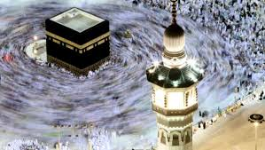

Premier Hajj and Umrah is a dedicated UK based tour operator that provides high-end Hajj and Umrah packages catering for every aspect of your journey.We know how much Hajj & Umrah means to you, so we give you the best.
We work tirelessly to deliver excellence: from the choice of flights, selection of hotels, room options, timetabled seminars with the Scholars in Medina, to dining and travel throughout the trip, we are there to give everything that Premier touch.
Think, fellow Muslim brother and sister, this is a once-in-a-lifetime journey for many, it is a pilgrimage to the Sacred places of worship, so let us make it count, make it memorable and comfortable!
When we know that our travel, accommodation and dining requirements have been taken care of, we can focus on the actual purpose of our visit: worship and seeking knowledge.
Premier’s Hajj and Umrah agent was awarded the ‘Best UK Hajj Operator 2012’ by the Saudi Hajj Ministry. Our agent is ATOL and IATA protected and registered with the Ministry of Hajj.
By Letting Premier Hajj make your 5 Star travel, accommodation and dining requirements, you can focus on the actual purpose of our visit: worship and seeking knowledge.
We are a professional and dedicated team that works tirelessly to make your Hajj as beautiful as possible. They'll take care of your needs from ticketing, flights and visas to coaches, hotels and food. They are trustworthy, there with you throughout Umrah and Hajj serving, helping and caring. We are never more than a phonecall away.
Our reputation and customer feedback speaks for itself, Our agents are Hajj Ministry approved and were chosen as the best UK Hajj agents 2012. Premier Hajj was a part of that partnership.
Our package comes under approved agents. An ATOL protected travel agency and Hajj Ministry approved.
Scholars who have participated include:
Shaikh Rabī bin Hādī, Shaikh Ubaid al-Jābirī, Shaikh Muhammad bin Hādee, Shaikh Abdullāh al-Bukhārī, Shaikh Muhammad Ramzān, Shaikh Ahmad as-Subay'ī, Shaikh Muhammad al-Anjarī, Shaikh Muhammad al-Aqīl.
Ahlus-Sunnah worldwide who have joined us:
Salafi Publications (UK), Troid (Canada) | Dārul-Hādīth (USA), Sunnah Publishing, (USA), Masjid Ibn Abdil-Wahhāb, (USA), Masjid Bayān (USA), Masjid al-Basīrah (Bradford, UK), The Salafi Masjid (UK), Salafi Da’wah (Singapore) | Al-Athariyyah (East London), Salafis of the Maldives, Sri Lanka, Pakistan, India (Masjid Uthmaan), Darus-Sunnah (Wembly, UK) and many more.
Each year more and more people join our packages. All praise is due to Allaah that we have only improved and excelled over the years.
Hajj and Umrah will Continue
Upon the authority of Abu Sa’eed Al Khudri – Radhiyallahu Anhu – who said: “Indeed Hajj and Umrah will be made to the House (i.e. the Ka’bah) even after Gog and Magog appear!” (Collected by Bukhaari (1516))
The Virtue of seeking Knowledge in Madinah

Upon the authority of Abu Hurairah – Radiyallahu anhu – who said i heard the Messenger of Allah – Sallallahu alaihi was salam – say: “Whoever comes to this Masjid of mine and he did not come except to learn or to teach something of good then he has the station of a Mujaahid in the way of Allah.” (Collected by Ibn Maajah (227) and declared ‘Saheeh’ By Shaikh Al Albaani in Saheeh Ibn Maajah)